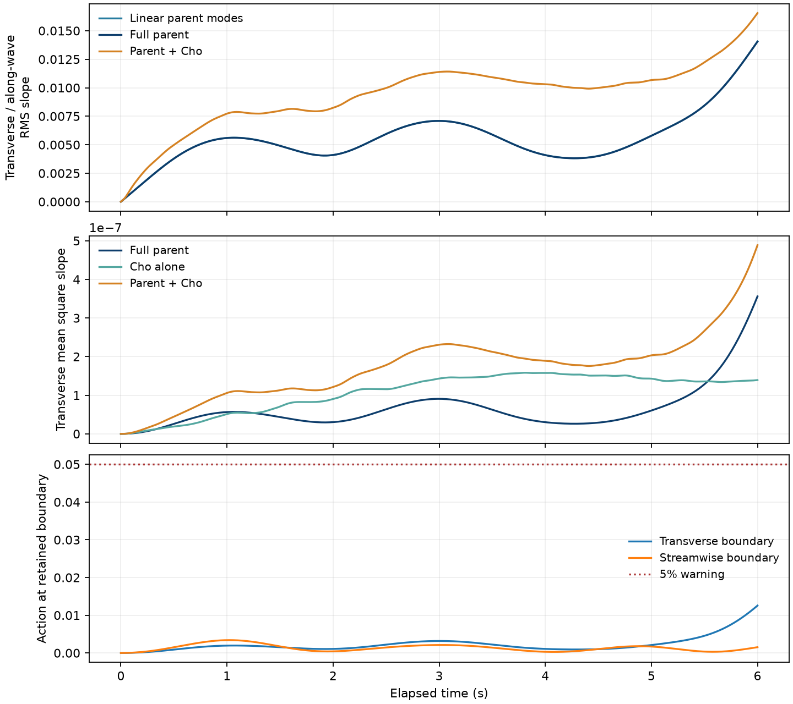
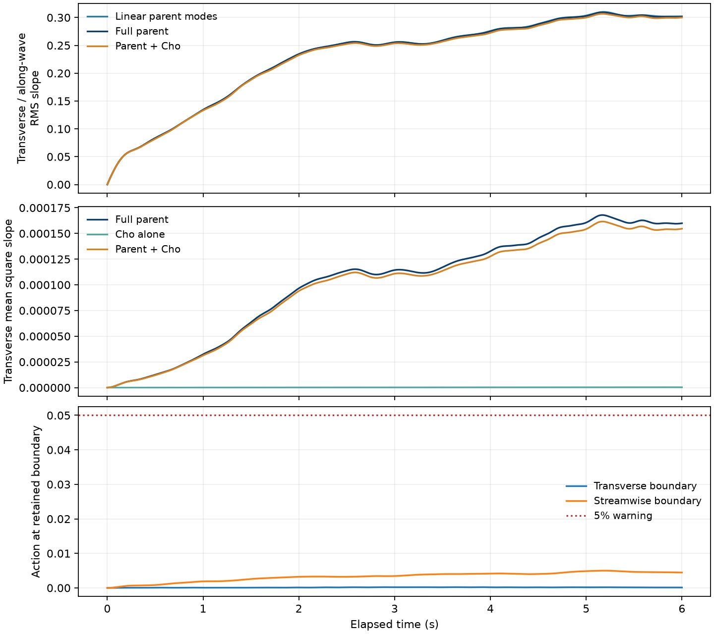

Do the wave modes limit transverse development?
Initially monochromatic 8 cm choppy waves interact with an evolving three-dimensional Langmuir current. Two matched runs retain either 9 or 231 parent-wave modes. A prescribed-parent control keeps the wave train independent of the current while the current evolves. Cho gravity-capillary roughness is enabled in all three cases at 2.4× molecular viscosity.
All cases use the same 32 × 64 cm domain, 12 cm depth, initial steepness ka = 0.06, and initially monochromatic parent. The current starts from the same wind-drift profile at physical age 16 s, with the same seeded Gaussian perturbation. The mean-current grid is 33 × 65 × 48; the Cho grid is 512 × 1024. Every retained wave mode participates in the full bounded second-order gravity-capillary surface reconstruction.
Matched comparisons
The two coupled cases include reciprocal parent–current feedback. Cho remains passive. The table reports parent-wave diagnostics; the separate mean-square-slope histories include the parent, Cho and their combined surface. Large boundary action indicates that a retained wave band may be too narrow.
| Case | Free modes | Current → parent | Peak transverse action | Peak linear-parent RMS slope y/x | Peak boundary action y / x | Output |
|---|---|---|---|---|---|---|
| Narrow band: 9 free modes | 9 | Enabled | 0.013 | 0.014 | 0.013 / 0.0034 | Summary · Parent history · Mean-square slope |
| Wide band: 231 free modes | 231 | Enabled | 0.494 | 0.310 | 0.00022 / 0.005 | Summary · Parent history · Mean-square slope |
| Prescribed-parent control | 1 | Disabled | — | — | — | Awaiting complete simulation and movies |
Narrow band: 9 free modes
Left: parent surface. Right: the same surface plus Cho roughness at 2.4× molecular viscosity. This clip shows physical time 5.5–6 s at 0.1× speed. The complete Cho and mean-square-slope records cover 0–6 s.
Playback metadata · Parent, Cho and combined mean-square slope
Full parent evolution
The parent-only view covers all six seconds, with fixed lighting and physical vertical proportions, to make transverse crest deformation visible.
Underwater current structures
Streamwise vorticity of the evolving wave-averaged current. The instantaneous wave orbital motion is not included.

Wide band: 231 free modes
Left: parent surface. Right: the same surface plus Cho roughness at 2.4× molecular viscosity. This clip shows physical time 5.5–6 s at 0.1× speed. The complete Cho and mean-square-slope records cover 0–6 s.
Playback metadata · Parent, Cho and combined mean-square slope
Full parent evolution
The parent-only view covers all six seconds, with fixed lighting and physical vertical proportions, to make transverse crest deformation visible.
Underwater current structures
Streamwise vorticity of the evolving wave-averaged current. The instantaneous wave orbital motion is not included.

Interpretation
This comparison tests whether the retained parent-wave modes constrain transverse crest development. It uses coarse mean-current resolution to study wave response; it is not a convergence study of turbulence or a reproduction of an experimental onset threshold. The successful prescribed-current refraction demonstration establishes that the representation can deform, but does not guarantee equally strong deformation under self-consistent evolving currents.